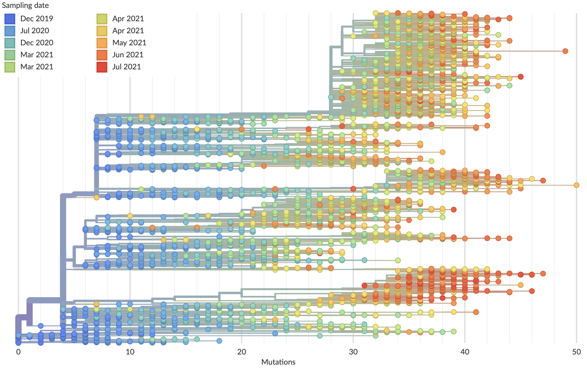
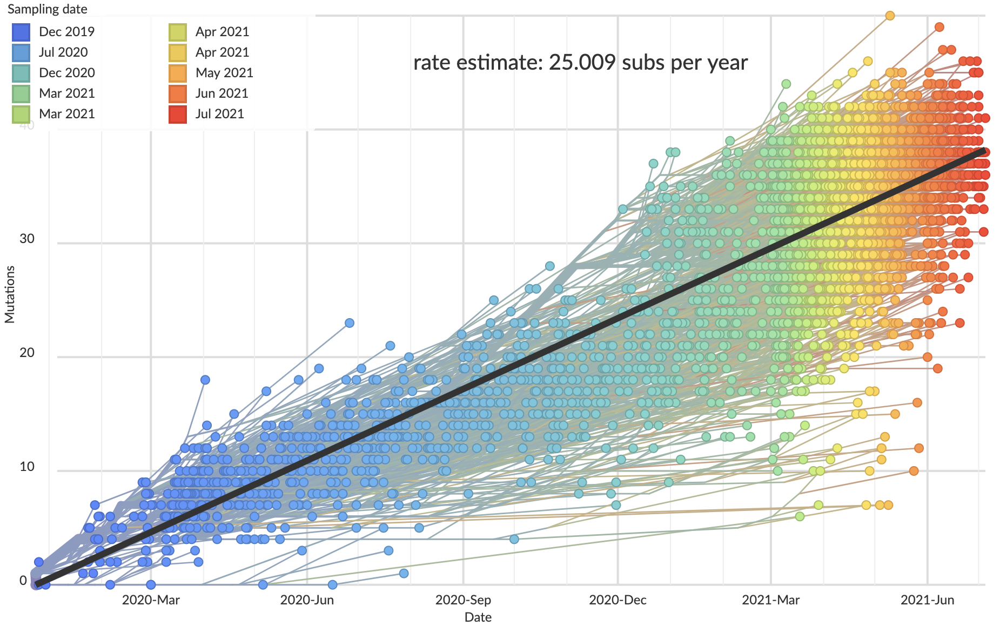
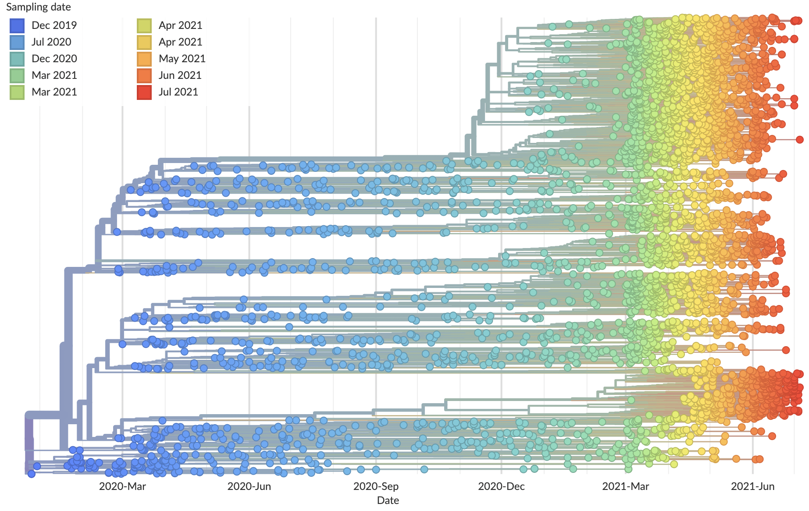
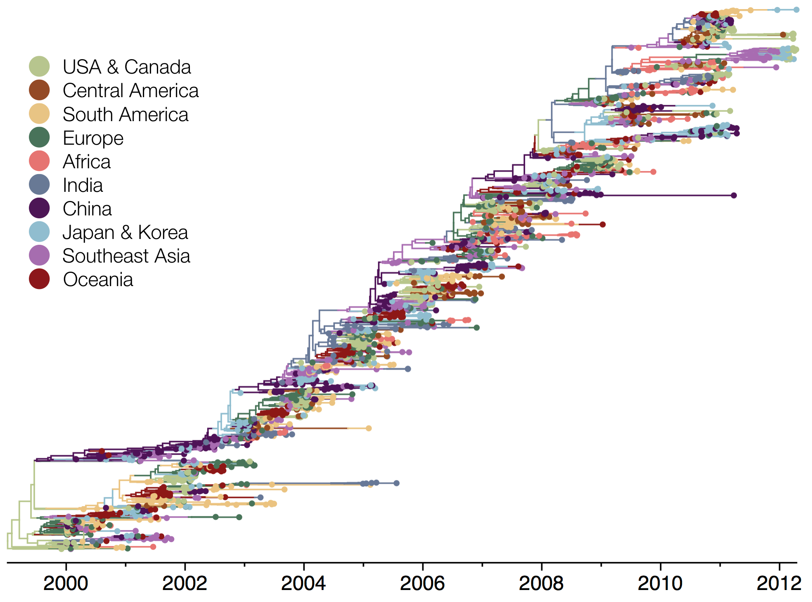
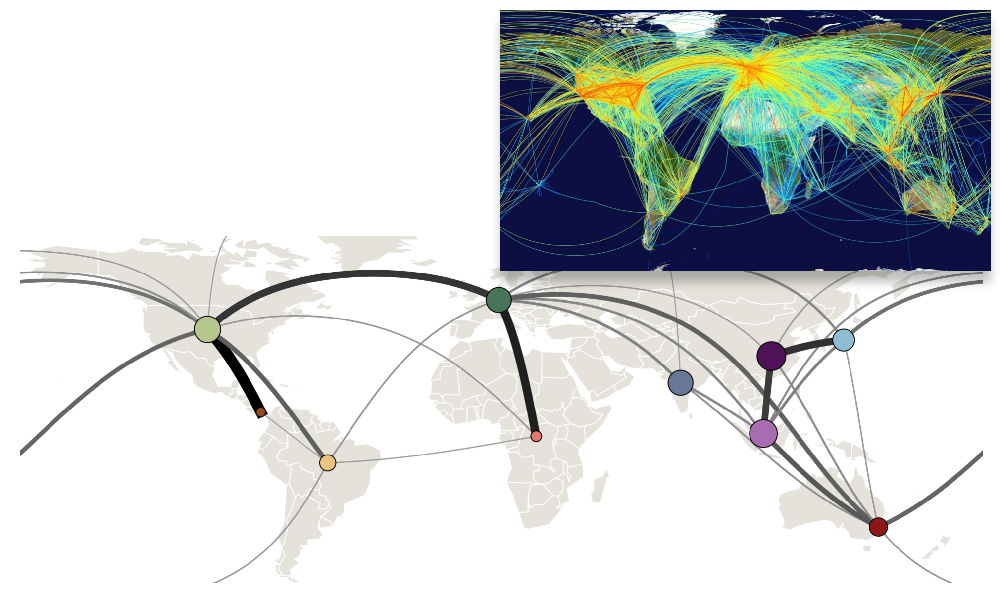
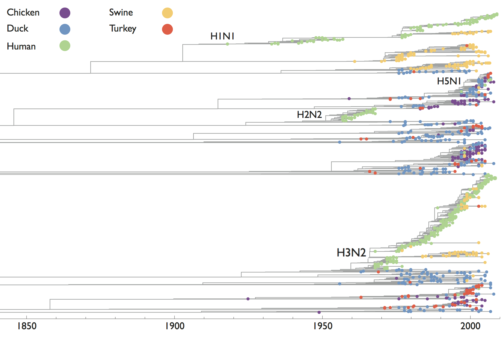
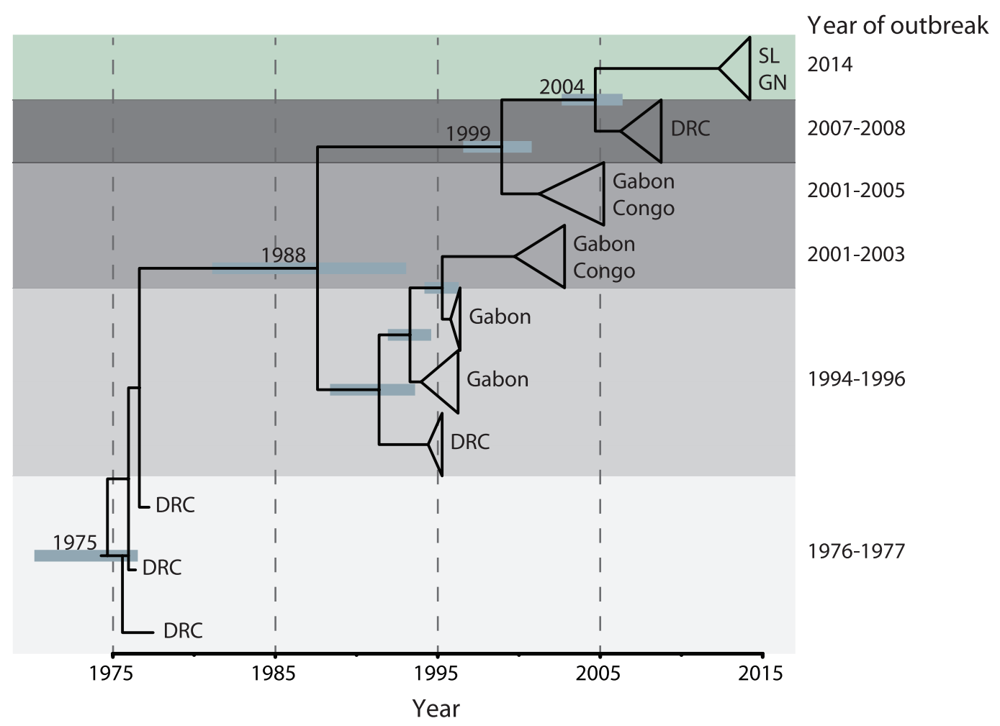
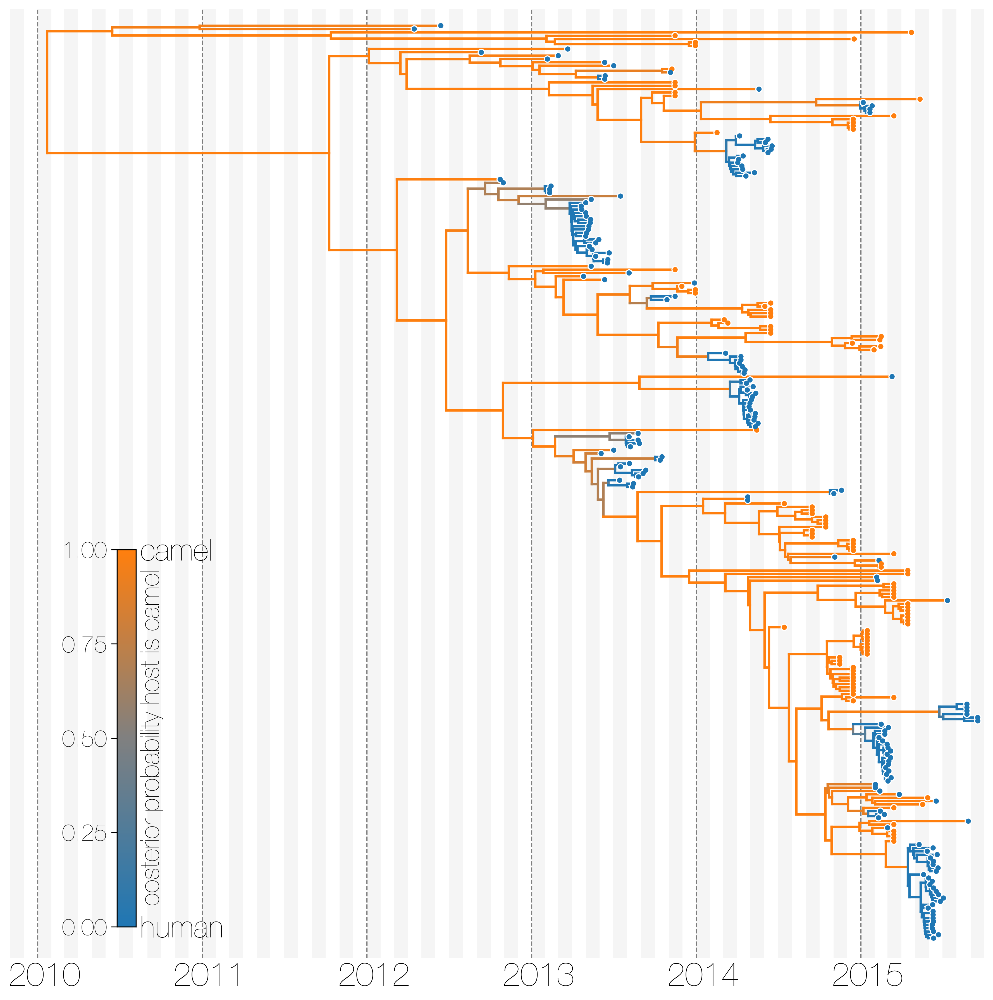
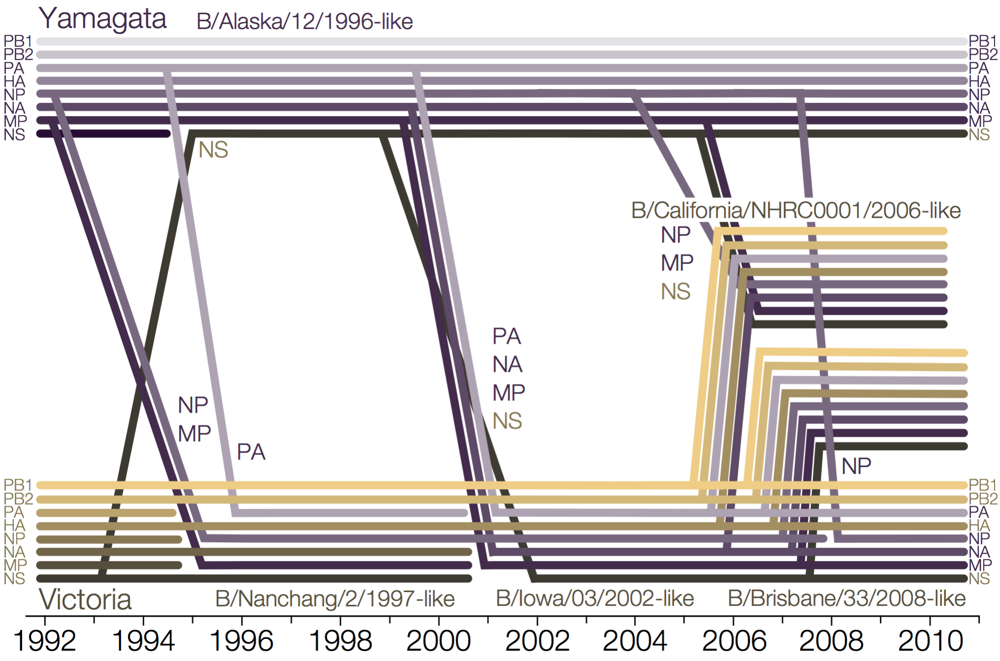
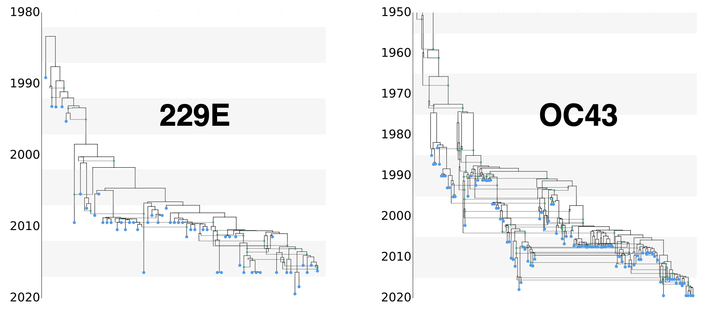

Phylogenetics


Phylogeny describes evolutionary relationships

Phylogeny is usually a hypothesis based on characteristics of sampled taxa

Phylogeny implies a series of mutational events leading to observed tip states

Parsimony is based on Occam's razor
Among competing hypotheses that predict equally well, the one with the fewest assumptions should be selected.
Parsimony suggests this topology requires 3 mutations at minimum

Parsimony suggests both topologies equally tenable

Exercise: which topology is more likely under parsimony?

Exercise: which topology is more likely under parsimony?

Exercise: which topology is more likely under parsimony?

Exercise: which topology is more likely under parsimony?

Exercise: which topology is more likely under parsimony?

Exercise: which topology is more likely under parsimony?

Exercise: which topology is more likely under parsimony?

Exercise: which topology is more likely under parsimony?

Phylogenetic inference

"Data" is generally a sequence alignment

Phylogeny structures site patterns

Buffalo. 2015
Tree space is vast
There are (2n-3)!! rooted trees for n taxa
- 3 taxa: 3 trees
- 5 taxa: 105 trees
- 10 taxa: 34,459,425 trees
- 20 taxa: 8.2 × 1021 trees
- 50 taxa: 2.8 × 1076 trees
- 100 taxa: 3.3 × 10184 trees
Solution space is rugged

Types of phylogenetic inference methods
- Distance-based (neighbor-joining, fast, heuristic)
- Parsimony (fast, "model-free")
- Maximum likelihood (infers model of mutation, accurate, examples: FastTree, RAxML, IQTREE)
- Bayesian (like ML, but requires prior, produces estimates of uncertainty, examples: MrBayes, BEAST)
Inference is a tree topology, branch lengths and ancestral states

Molecular clocks and dated phylogenies
Mutations tend to accumulate in a clock-like fashion
"Root-to-tip" plots show temporal signal
Allows conversion between branch length and time
Dated phylogenies provide real-world context

Inference of discrete traits
"Data" is a phylogeny and tip states
States include nucleotides, amino acids, geo locations, hosts, etc...

Model infers transition matrix and ancestral states

Rare transitions, short branches and many taxa increase confidence
Phylogeography
Nesting patterns are informative

Zika phylogeny infers an origin in northeast Brazil

Influenza phylogeny shows repeated spread from E-SE Asia
Influenza transitions mirror air travel network
Detailed inference of SARS-CoV-2
introductions into the UK


Reservoir species and host jumps
Influenza has a reservoir in wild birds, spillovers sometimes become endemic
Each Ebola outbreak derives from a separate spillover event
MERS-CoV has frequent spillover events, but limited human-to-human transmission
Reassortment and recombination
Influenza B reassorts across segments

Reassortment splits gene constellations
Recombination in seasonal coronaviruses
Summary
- Phylogenetics uses sequence data to infer trees along with ancestral states
- Molecular clocks provide a real-world context to evolutionary events
- Phylogeny reveals behavior of discrete traits, like geographic location and host state